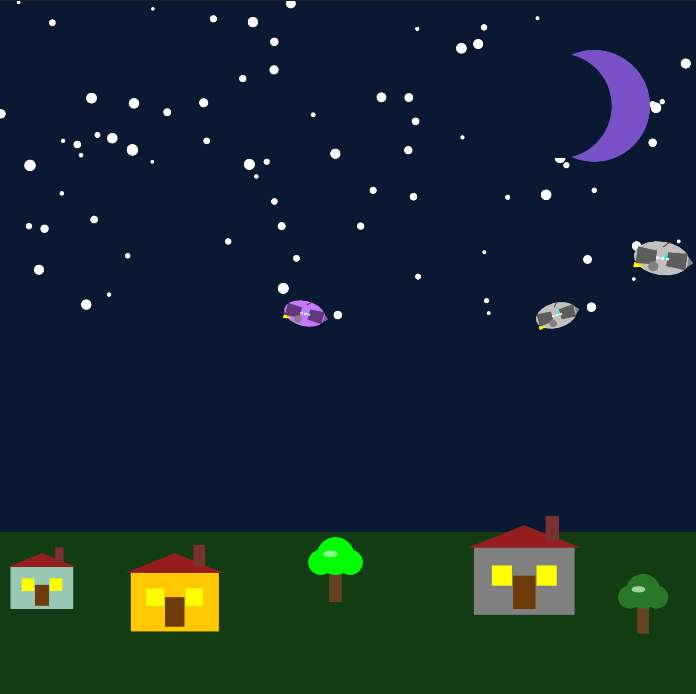

York College of Pennsylvania
Bachelor’s studies in Computer Science
Minor in Data Science
Epected 2028
Computer Science · Class of 2028
Computer Science student at York College of Pennsylvania, minoring in Data Science.
01 · About
I’m a Computer Science student at York College of Pennsylvania with a minor in Data Science. This portfolio will document my engineering work from the problem and technical decisions through the final implementation.
02 · Education
Bachelor’s studies in Computer Science
Minor in Data Science
03 · Projects
Easy Spend is a responsive epense tracker that lets users add and categorize epenses, monitor total spending and remaining balance, and filter their records. Its interactive pie chart turns spending by category into clear percentage-based insights.
A Java graphics program built with the StdDraw library that renders a layered night scene — starry sky, crescent moon, houses, trees, and a fleet of spaceships — then animates the ships with smooth sinusoidal motion and rotation. Designed with object-oriented principles: parameterized, reusable drawing methods for every object in the scene.

04 · Contact
Visit my GitHub profile to eplore my repositories and review my latest commits and contributions.
View GitHub profile